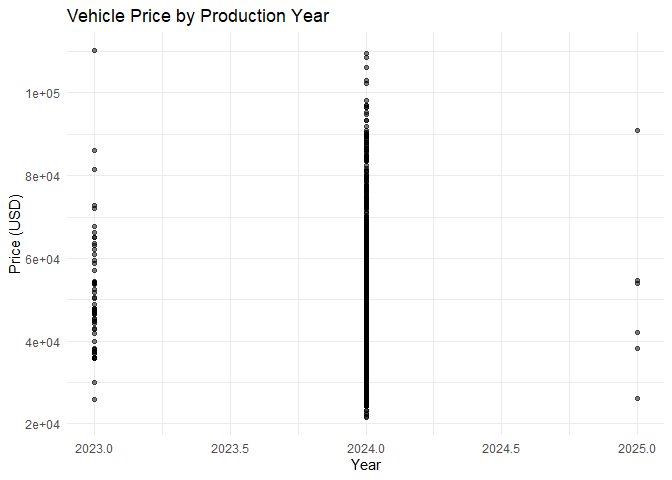

This README includes: -
Package Overview: A description of AutoPrice and its main features.
Installation Instructions: How to install the package from GitHub.
Example Usage: Loading the dataset, conducting basic analysis, and generating summary statistics.
Shiny App Instructions: How to start and use the Shiny app.
Contributing and License: Information on contributing to the package and licensing.
The AutoPrice package provides tools for analyzing vehicle price trends across production years, vehicle makes, models, and more. This package is designed to support data-driven insights in the automotive industry, focusing on price changes from 2023 to 2025 to help users understand the factors driving price fluctuations.
Dataset Access: A cleaned dataset (vehicles_clean) with over 9,000 vehicles, covering essential details like price, year, make, model, fuel type, mileage, transmission, and body type. Shiny App: An interactive Shiny app that allows users to explore vehicle price distributions, filter data by various attributes, and download the filtered results. Data Analysis Tools: Functions for analyzing price trends by production year, vehicle make, and other attributes.
You can install the development version of AutoPrice from GitHub with:
# Install devtools if you haven't already
install.packages("devtools")
# Install from GitHub
devtools::install_github("ETC5523-2024/assignment-4-packages-and-shiny-apps-richisusiljacob")The primary dataset, vehicles_clean, can be accessed directly from the package. This dataset includes vehicles manufactured from 2023 to 2025, with fields such as price, year, make, model, and fuel.
Here’s a simple analysis that shows the distribution of vehicle prices by year:
library(ggplot2)
ggplot(vehicles_clean, aes(x = year, y = price)) +
geom_point(alpha = 0.5) +
labs(title = "Vehicle Price by Production Year",
x = "Year",
y = "Price (USD)") +
theme_minimal()
You can also view basic summary statistics of the vehicle prices:
summary(vehicles_clean$price)
#> Min. 1st Qu. Median Mean 3rd Qu. Max.
#> 21637 36891 47165 49734 58750 110150The AutoPrice package includes a Shiny app for interactive exploration of the dataset. This app provides tools for filtering vehicle data by year, price range, make, transmission type, and body type. The app generates a histogram showing the distribution of prices based on these filters, and users can download the filtered data.
The AutoPrice package includes a Shiny app for interactive exploration of the dataset. This app provides tools for filtering vehicle data by year, price range, make, transmission type, and body type. The app generates a histogram showing the distribution of prices based on these filters, and users can download the filtered data.
To launch the Shiny app, use the following command:
library(AutoPrice)
VehiclePriceApp()Once the app is running, We can:
Filter data by year (2023, 2024, 2025), price range, make, transmission, and body type.
View a histogram of vehicle prices based on the selected filters.
Download the filtered dataset for further analysis.
We welcome contributions to enhance the functionality of AutoPrice. If you’d like to contribute, please submit a pull request or open an issue on GitHub.
The AutoPrice package is licensed under the MIT License.
The full documentation for the AutoPrice package is available here.